## {{ page.title }}
---
# Outline
1. Historical background of molecular evolution
2. Sequence distances and sequence evolution models
3. Phylogenetics and tree building
---
# Sources
- [Adam Smith's lecture of Phylogenetic Trees](https://pages.cs.wisc.edu/~aasmith/biolec/trees.html)
- [Bioinformatics and Molecular Evolution by Higgs and Attwood](https://onlinelibrary.wiley.com/doi/book/10.1002/9781118697078)
- [Molecular Evolution: A Phylogenetic Approach, by Page and Holmes](https://www.wiley.com/en-sg/Molecular+Evolution%3A+A+Phylogenetic+Approach-p-9780865428898)
---
Tree thinking (1827) and Origin of Species (1859)

 ---
What makes evolution molecular?
---
Brown et al (1955) [10.1042/bj0600556](https://doi.org/10.1042/bj0600556)
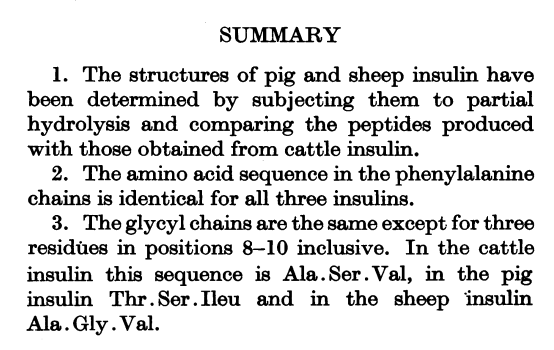
Early evidence of species differ at the molecular level
Contributed to Sanger's first Nobel prize in 1958
---
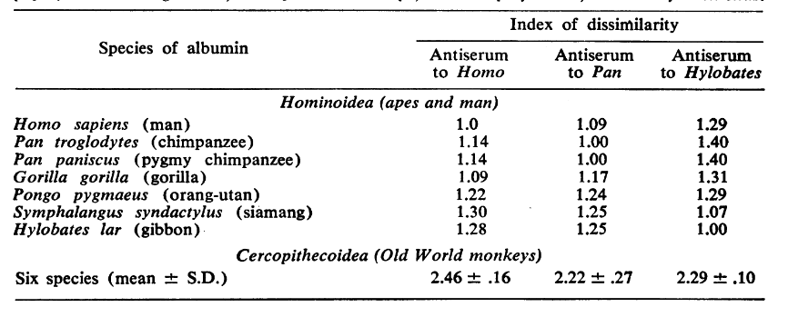
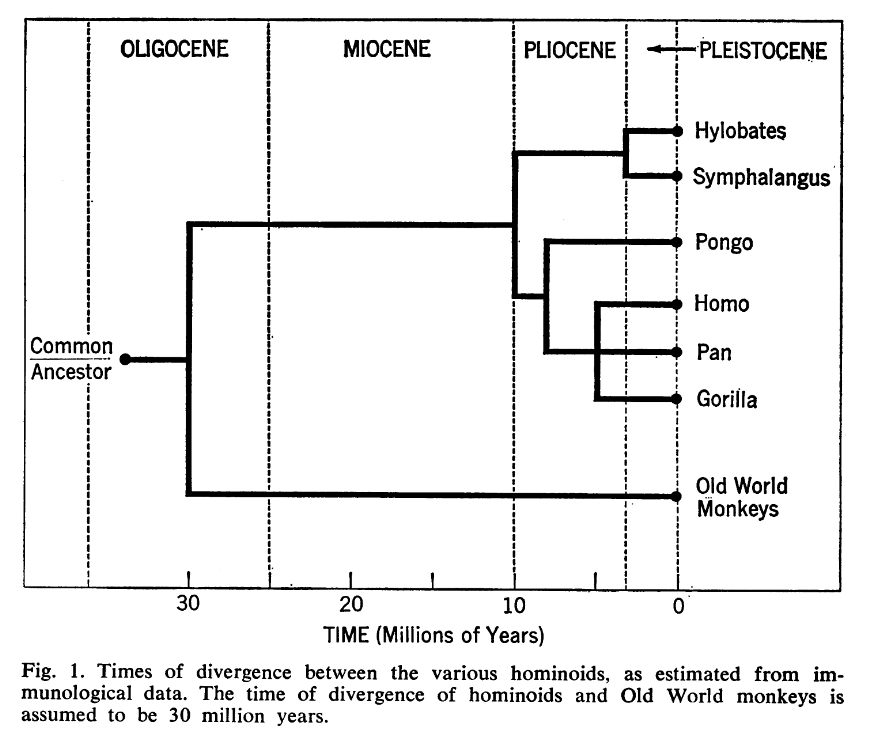
---
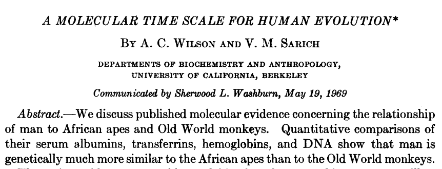
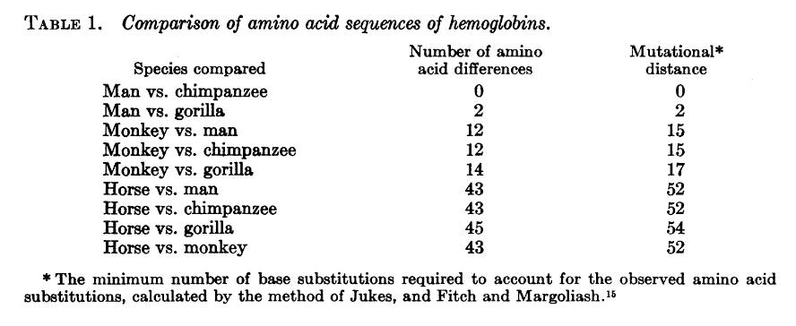
---
Shao et al. 2023, Science <10.1126/science.abn6919>
---
What makes evolution molecular?
---
Brown et al (1955) [10.1042/bj0600556](https://doi.org/10.1042/bj0600556)
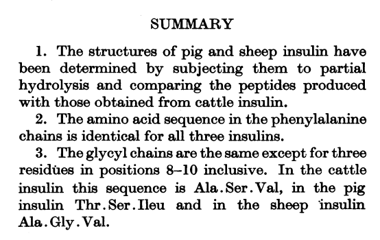
Early evidence of species differ at the molecular level
Contributed to Sanger's first Nobel prize in 1958
---
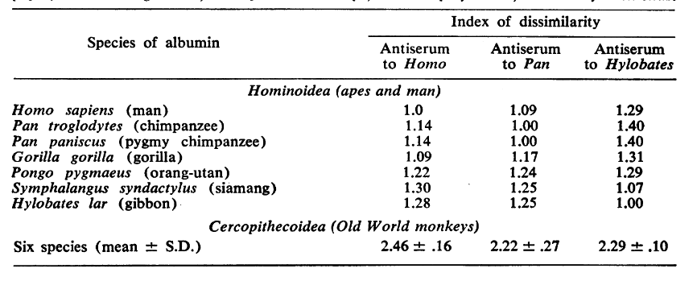
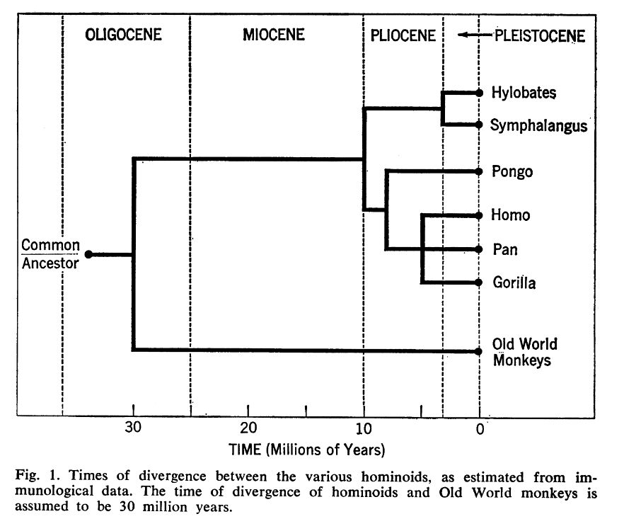
---
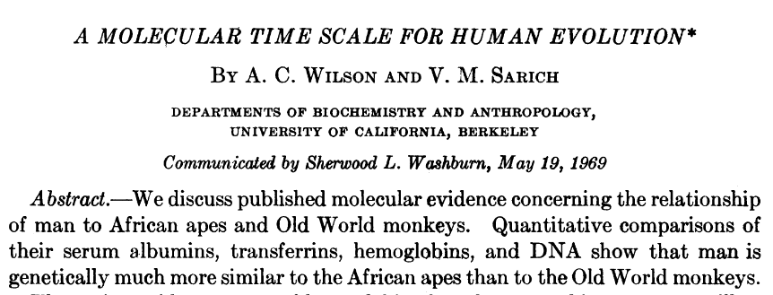
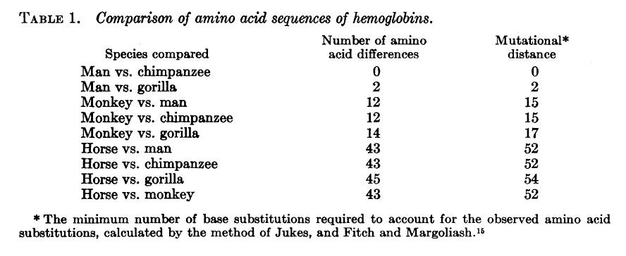
---
Shao et al. 2023, Science <10.1126/science.abn6919>
 ---
Hug et al 2016, Nature Microbiology
---
Hug et al 2016, Nature Microbiology
 ---
Homology
> Two characters are homologous if they are related by descent from a common ancestor
---
### Two types of tree
Rooted trees provide **direction**;
unrooted trees only show relationships.
---
### What's the difference?
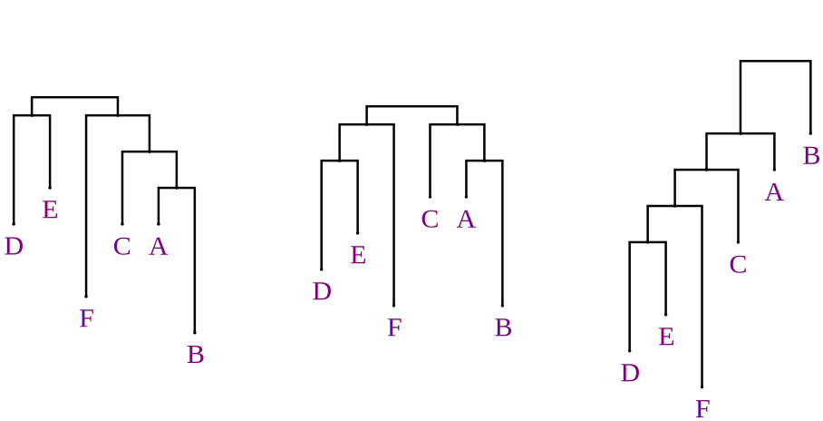
---
Homology
> Two characters are homologous if they are related by descent from a common ancestor
---
### Two types of tree
Rooted trees provide **direction**;
unrooted trees only show relationships.
---
### What's the difference?
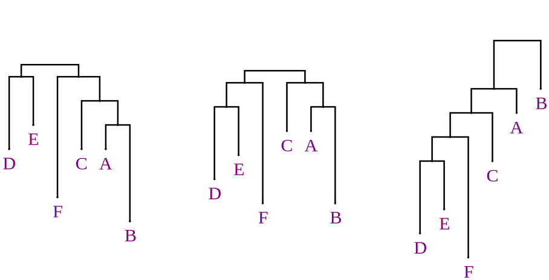
Are these trees rooted?
---
### Can you root an unrooted tree?
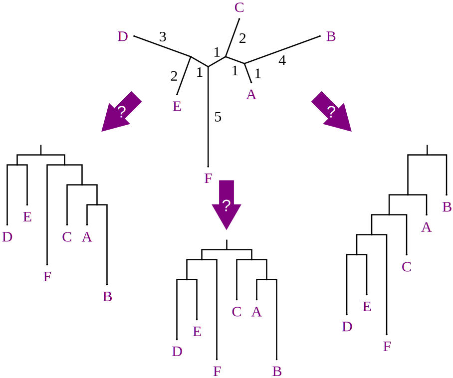
---
### Can you root an unrooted tree?
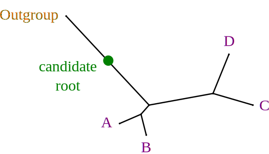
An outgroup is a species known to be outside the group of interest.
The root must be between the outgroup and the ingroup.
---
### Are these the same tree? Example 1
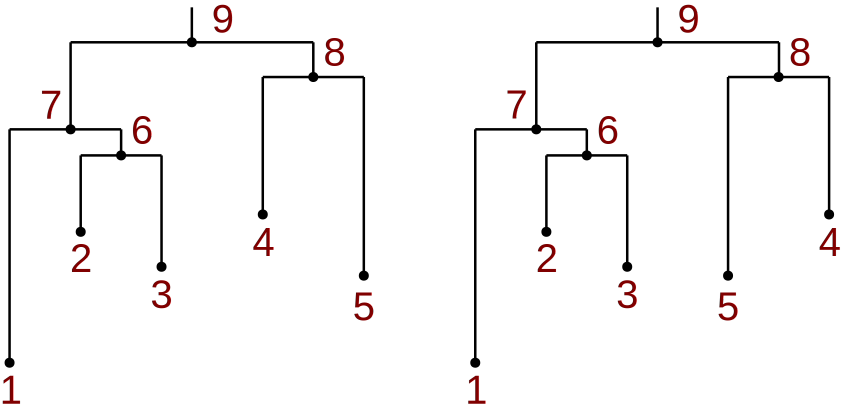
---
### Are these the same tree? Example 2
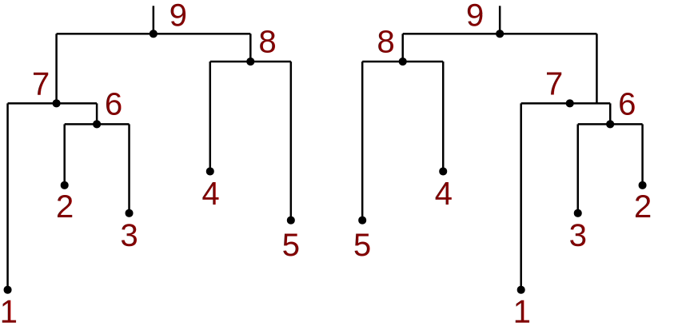
---
### Are these the same tree? Example 3
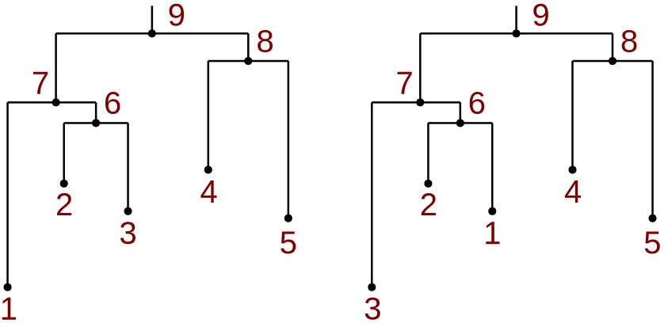
---
### Are these the same tree? Example 4
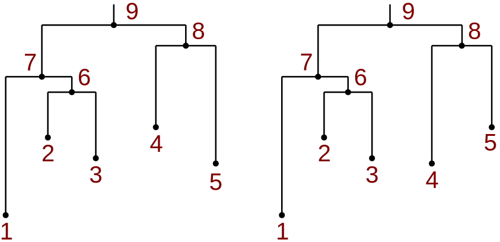
---
### How can we find the optimal tree?
Brute force?
1. Enumerate all possible trees
2. Calculate the score for each tree
3. Choose the tree with the best score
---
# How many trees?
$$
T = \prod_{k=2}^{n} (2k-3)
$$
$$
= \frac{(2n-3)!}{(n-2)!2^{n-2}}
$$
```R
possibleTrees = function(ntaxa) {
factorial(2*ntaxa-3) / (factorial(ntaxa-2) * 2^(ntaxa-2))
}
```
---
# How many trees?
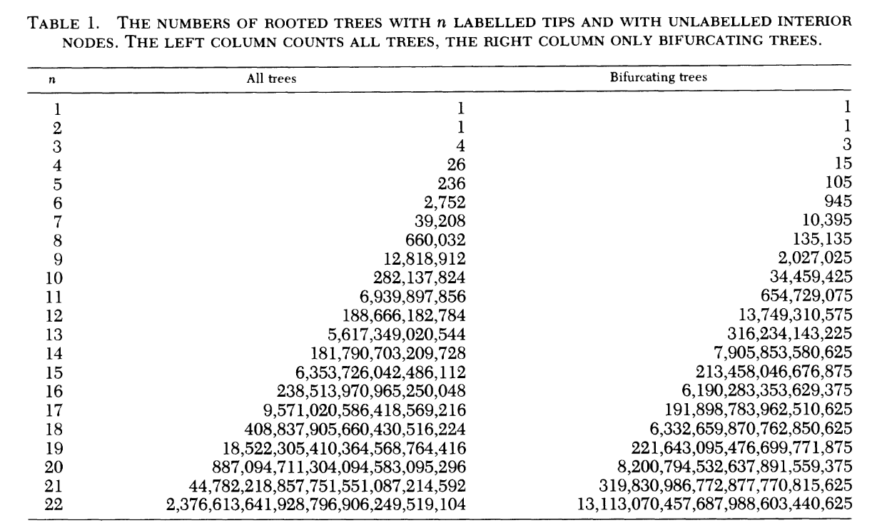
---
## Sequence distance
How different are they?
```console
ACCTGTAATC
ACGTGCGATC
* **
```
Count the proportion of differences, $D=3/10$
---
## Problems with $D$
Multiple hits means:
$D$ does not increase linearly with time
$D$ is not additive
flowchart TB
A --x C
A --> X[A]
flowchart TB
A --x X2[C]
A --x X[C]
---
Instead, imagine a distance $d$: the average number of substitutions that have ~~been observed~~ occurred per site
(this increases linear with time, assuming random and constant mutation rate)
(this is additive)
Unfortunately, $d$ is not observable. But can we calculate it from $D$?
---
## Jukes-Cantor distance
$$
d = -\frac{3}{4} \log\left(1 - \frac{4}{3}D\right)
$$
---
## Jukes-Cantor distance
```R
D = seq(0, 0.75, by=0.01)
jcdist = function(D) { -3/4 * log(1-(4/3)*D) }
plot(D, jcdist(D, type="l", xlab="Observed proportion of differences", ylab="Jukes-Cantor d")
```
---
Models of sequence evolution
$$
P_t = \begin{bmatrix}
p_{AA} & p_{AC} & p_{AG} & p_{AT} \\\\
p_{CA} & p_{CC} & p_{CG} & p_{CT} \\\\
p_{GA} & p_{GC} & p_{GG} & p_{GT} \\\\
p_{TA} & p_{TC} & p_{TG} & p_{TT}
\end{bmatrix}
$$
---
$$
P_t = \begin{bmatrix}
\frac{3}{4} & \frac{1}{12} & \frac{1}{12} & \frac{1}{12} \\\\
\frac{1}{12} & \frac{3}{4} & \frac{1}{12} & \frac{1}{12} \\\\
\frac{1}{12} & \frac{1}{12} & \frac{3}{4} & \frac{1}{12} \\\\
\frac{1}{12} & \frac{1}{12} & \frac{1}{12} & \frac{3}{4}
\end{bmatrix}
$$
$$
d = -\frac{3}{4} \log\left(1 - \frac{4}{3}D\right)
$$
---
## Kimura 2-parameter model
$$
P_t = \begin{bmatrix}\begin{smallmatrix}
\frac{1}{2}e^{-\frac{2}{3}t} + \frac{1}{2} & \frac{1}{4}e^{-\frac{2}{3}t} - \frac{1}{4} & \frac{1}{4}e^{-\frac{2}{3}t} - \frac{1}{4} & \frac{1}{4}e^{-\frac{2}{3}t} - \frac{1}{4} \\\\
\frac{1}{4}e^{-\frac{2}{3}t} - \frac{1}{4} & \frac{1}{2}e^{-\frac{2}{3}t} + \frac{1}{2} & \frac{1}{4}e^{-\frac{2}{3}t} - \frac{1}{4} & \frac{1}{4}e^{-\frac{2}{3}t} - \frac{1}{4} \\\\
\frac{1}{4}e^{-\frac{2}{3}t} - \frac{1}{4} & \frac{1}{4}e^{-\frac{2}{3}t} - \frac{1}{4} & \frac{1}{2}e^{-\frac{2}{3}t} + \frac{1}{2} & \frac{1}{4}e^{-\frac{2}{3}t} - \frac{1}{4} \\\\
\frac{1}{4}e^{-\frac{2}{3}t} - \frac{1}{4} & \frac{1}{4}e^{-\frac{2}{3}t} - \frac{1}{4} & \frac{1}{4}e^{-\frac{2}{3}t} - \frac{1}{4} & \frac{1}{2}e^{-\frac{2}{3}t} + \frac{1}{2}
\end{smallmatrix}\end{bmatrix}
$$
$$
d = -\frac{1}{2} \log\left(1 - 2D\right) - \frac{1}{4} \log\left(1 - \frac{4}{3}D\right)
$$
---
## GTR model
$$
P_t = \begin{bmatrix}
p_{AA} & p_{AC} & p_{AG} & p_{AT} \\\\
p_{CA} & p_{CC} & p_{CG} & p_{CT} \\\\
p_{GA} & p_{GC} & p_{GG} & p_{GT} \\\\
p_{TA} & p_{TC} & p_{TG} & p_{TT}
\end{bmatrix}
$$
---
# Tree building
1. Distance-based methods
2. Parsimony
3. Maximum likelihood
4. Bayesian inference
---
# Distance-based methods
1. Compute distances between all pairs of sequences
2. Build a tree based on a distance MATRIX
---
UPGMA: Unweighted Pair Group Method with Arithmetic Mean
1. Start with a distance matrix
2. Find the closest pair of sequences
3. Join them with a new node
4. Compute the distances for the new node by averaging the distances to the other nodes
5. Repeat until all sequences are joined
---
If the data are ultrametric: the UPGMA tree is guaranteed to be correct
ultrametric means: the distance between any two tips is the same
or, equivalently, for any 3 species on an ultrametric tree, the two largest distances will be equal
if sequences are evolving at a constant rate, the data will be approximately ultrametric
Problems with UPGMA
- assumes a molecular clock -- that the rate of evolution is constant across the tree
In reality, the rate of evolution is not constant because selection varies:
- among lineages
- among types of genes
- among genes in an organism
- among sites in a gene
- among times and locations with
---
Problems with UPGMA
Also:
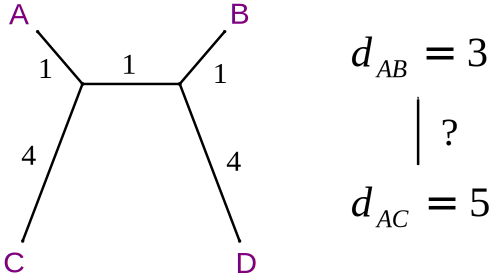
---
Neighbor-joining (Saitou and Nei 1987)
In UPGMA, the pair-to-merge is the one with the minimum $d(i,j)$.
In NJ, we also build a tree by interatively joinin nodes,
but the pair-to-merge is the one that minimizes $Q$:
$$
\small
Q(i,j) = (n-2)d(i,j) - \sum_k d(i,k) - \sum_k d(j,k)
$$
$n$ is the number of current taxa.
$k$ sums over all other taxa
---
If the data are additive: the neighbor-joining tree is guaranteed to be correct
additive means: the distance between any two tips is the sum of the branch lengths between them
ultrametric data is by definition additive, but not vice versa
---
Problems with distance-based methods
- they are greedy
- they don't consider the sequences themselves, only the distances
- they rely on restrictive assumptions not typically met in real data (ultrametricity or additivity)
- they don't consider the possibility of multiple trees with the same score
---
Direct methods
- Parsimony
- Maximum likelihood
- Bayesian inference
---
# Parsimony
Choose the tree that requires the fewest evolutionary changes
---
Consider this MSA (Multiple Sequence Alignment)
```
Species 1 AAG
Species 2 AAA
Species 3 GGA
Species 4 AGA
```
Which tree is more parsimonious?
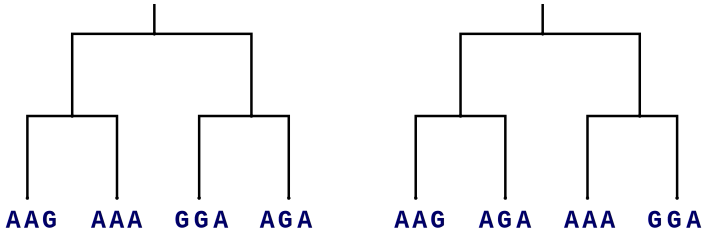
---
Consider this MSA (Multiple Sequence Alignment)
```
Species 1 AAG
Species 2 AAA
Species 3 GGA
Species 4 AGA
```
Which tree is more parsimonious?
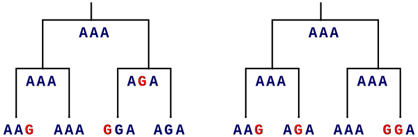
---
Algorithms:
- Scoring parismony: Fitch (1971) [Toward Defining the Course of Evolution: Minimum Change for a Specific Tree Topology](https://doi.org/10.1093/sysbio/20.4.406)
- Weighted parsimony: see Sankoff (1975) [Minimal Mutation Trees of Sequences](https://doi.org/10.1137/0128004)
---
Advantage of parsimony:
- faster than likelihood methods
- simple, straightforward, logical
- lacks a model; suitable for morphological data
Disadvantages of parsimony:
- requires a tree-search
- slower than distance methods
- long-branch attraction
- lacks a model
---
# Maximum likelihood
What is the most likely tree?
---
Disadvantages of maximum likelihood:
Computationally intensive
---
Order of operations for phylogenetics
1. Identify orthologs
2. Align sequences (homology statements)
3. Build a tree
---
Multiple alignment with fast-fourier transform (MAFFT)
See
---
## File formats
---
FASTA format: raw sequences
```console
>sequence1
tgcatgactgctagctatgcatgcatacggcatatagc
>sequence2
tgcacgcactgctagctatgcaggcatacggcatatagc
>sequence3
tgcatgactgctagctatgcatgcataccatatagc
```
---
FASTA format: aligned sequences
```console
mafft dummy.fasta > dummy_aligned.clusta
```
```console
>sequence1
tgcatg-actgctagctatgcatgcatacggcatatagc
>sequence2
tgcacgcactgctagctatgcaggcatacggcatatagc
>sequence3
tgcatg-actgctagctatgcatgcatac--catatagc
---
CLUSTAL format
```console
mafft --clustalout dummy.fasta > dummy_aligned.clusta
```
```console
CLUSTAL format alignment by MAFFT FFT-NS-2 (v7.520)
sequence1 tgcatg-actgctagctatgcatgcatacggcatatagc
sequence2 tgcacgcactgctagctatgcaggcatacggcatatagc
sequence3 tgcatg-actgctagctatgcatgcatac--catatagc
****.* *************** ****** ********
```
---
## NEXUS format
```
#NEXUS
BEGIN DATA;
DIMENSIONS NTAX=3 NCHAR=39;
FORMAT DATATYPE=DNA MISSING=? GAP=-;
MATRIX
sequence1 tgcatg-actgctagctatgcatgcatacggcatatagc
sequence2 tgcacgcactgctagctatgcaggcatacggcatatagc
sequence3 tgcatg-actgctagctatgcatgcatac--catatagc
;
END;
```
---
## PHYLIP format
```
3 39
sequence1 tgcatg-actgctagctatgcatgcatacggcatatagc
sequence2 tgcacgcactgctagctatgcaggcatacggcatatagc
sequence3 tgcatg-actgctagctatgcatgcatac--catatagc
```
---
## Newick format
```console
((x,y),z);
```
```console
((x,y),(z,w));
```
---
Plot trees in R with the `ape` package
```R
plot(ape::read.tree(text="((x,y),z));"))
```

---
Nested groups
```R
plot(ape::read.tree(text="((x,y),(z,w));"))
```

---
Branch lengths
```R
plot(ape::read.tree(text="((x:0.2,y:0.4):0.1,(z:0.3,w:0.3):0.8);"))
```

---
How to use IQ-TREE
```
# Infer maximum-likelihood tree with auto-selected model
iqtree -s example.phy
# Find best-fit model only
iqtree -s example.phy -m MF
# Parallel processing
iqtree -s example.phy -nt 4
```
---
# SLURM
```bash
#!/bin/bash
#SBATCH --job-name=mafft
#SBATCH --output=mafft.out
#SBATCH --error=mafft.err
#SBATCH --time=1:00:00
#SBATCH --ntasks=1
#SBATCH --cpus-per-task=1
#SBATCH --mem-per-cpu=1G
#SBATCH --partition=cobi
#SBATCH --
mafft --auto input.fasta > output.fasta
```
```bash
sbatch slurm_script.sh
```
---
Basic HPC
---
# Bayesian inference
Bayes' theorem
---
Theorem 1: Conditional probability
$$
P(A|B) = \frac{P(A \cap B)}{P(B)}
$$
---
Theorem 2: Intersection
$$
P(A \cap B) = P(A|B)P(B)
$$
---
Theorem 3: The law of total probability
$$
P(A) = \sum_B P(A|B)P(B)
$$
---
$$
P(A|B) = \frac{P(A \cap B)}{P(B)}
$$
$$
P(A \cap B) = P(A|B)P(B)
$$
$$
P(A) = \sum_B P(A|B)P(B)
$$
---
$$
P(A \cap B) = P(B \cap A) \\\\
$$
$$
P(A|B)P(B) = P(B|A)P(A) \\\\
$$
$$
P(A|B) = \frac{P(B|A)P(A)}{P(B)}
$$
---
- Allows us to invert conditional probabilities
- We have the probability of the data given the hypothesis
- We want the probability of a hypothesis given the data
$$
P(H|D) = \frac{P(D|H)P(H)}{P(D)}
$$
---
$$
P(H|D) = \frac{P(D|H)P(H)}{P(D)}
$$
$P(H)$ - probability of the hypothesis before we see the data, prior probability
$P(H|D)$ probability of the hypothesis after we see the data, posterior.
$P(D|H)$ probability of the data under the hypothesis, likelihood.
$P(D)$ - total probability of the data, under any hypothesis
---
# Deriving Jukes-Cantor distance